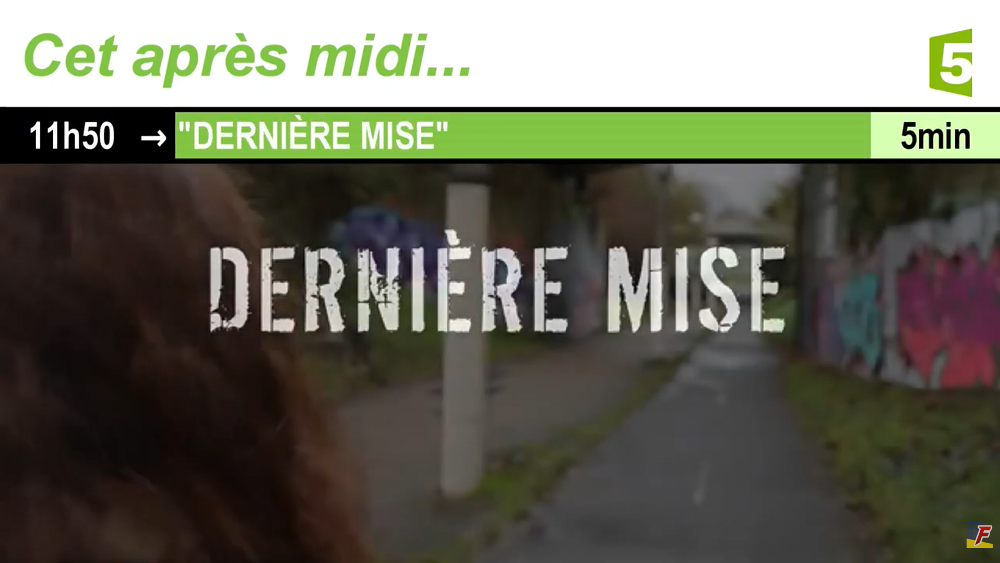

Projet E3 IMAC
FICTIF FRANCE 5

Terminé
Langue :

Début du projet :
21/05/2026
Fin du projet :
18/06/2026
Logiciels
Avid ProTools
Audacity
onlinesequencer.net
Equipe
Matthieu FARANDJIS
Plus sur le projet
Présentation

Ce projet a été effectué dans le cadre de nos cours de traitement du son de la filière ingénieur IMAC de l'ESIEE Paris.
Le cahier des charges est le suivant :
Deux captations originales
Montage audio
Création d'un son Midi (musique, jingle...)
Mixage
Utilisation du logiciel ProTools d'Avid, rendu d'un fichier audio dans la configuration demandée.
L'habillage de 2002 de France 5 joue sur les onomatopées, les bruitages fondés sur des captations sonores et vocales.
J'ai jugé intéressant de refaire l'habillage sonore dans le cadre de ce projet de traitement du son.
Les coming-next (« vidéos tout de suite » / « dans un instant ») ont été faits indépendamment du projet il y a quelques années.
J'ai simplement modifié les éléments dans le cadre de ce projet. Concernant la vidéo « cet après-midi »,
elle ne respecte pas l'habillage de La Cinquième / France 5, mais a été créée dans le cadre de ce projet.
Effets audio
Ce que j'ai apprécié dans cette reproduction, c'est le fait de réfléchir à comment étaient faits les effets.
Par exemple, pour le "boing" "pi", je pensais que c'était un simple travail de la voix. Absolument pas !
Pour faire un "boing" qui donne vraiment une impression de rebond, il faut utiliser l'option TCE tool dans le menu Pro Tools sur le "boing".
L'objectif était d'étendre le son sans pour autant changer sa tonalité.
Voici une page expliquant l'effet : https://www.protoolstraining.com/blog-help/pro-tools-blog/tips-and-tricks/395-using-advanced-trim-tool-features
Ma voix était trop grave pour le "Pi", j'ai rendu le son plus aiguë toujours à l'aide de Pro Tools.
Ensuite, j'ai utilisé la stéréo pour donner un effet de déplacement (premier boing venant à la gauche, puis on l'entend à droite, puis un peu moins fort à droite).
Le projet ne s'arrête pas qu'à ça.
Pour l'effet du volet qui s'ouvre, je déchire une feuille de papier. Pour le bandeau du titre qui descend (après l'ouverture du volet), j'ai enregistré un livre un peu souple qui frappe la table.
J'ai enregistré plusieurs fois le même son afin de sélectionner le meilleur rendu.
Logiciels
J'ai utilisé principalement le logiciel Pro Tools, de préférence, la version gratuite car je pouvais l'utiliser sur mon
ordinateur personnel. L'Université Gustave Eiffel propose la version payante dans l'une des salles informatiques de notre bâtiment.
J'ai utilisé onlinesequencer.net pour composer la piste MIDI (qui est le son qui est joué en fond dans les coming next, vu que je n'ai pas repris celui de France 5).
Ensuite, j'ai importé le fichier dans Pro Tools, effectué quelques réajustements et choisi deux instruments pour lire la piste
J'ai également utilisé Audacity (j'ai oublié de le mentionner au professeur, tant pis) uniquement pour les enregistrements audio car je le trouvais plus pratique que Pro Tools.
Mais ça revenait au même. J'ai juste eu un problème lors de l'importation des fichiers à cause de la fréquence d'échantillonnage + les paramètres des haut-parleurs côté Windows 11.
Mais je préférais quand même m'enregistrer via Audacity
Pour la vidéo, j'ai utilisé CyberLink Power Director. Des extraits proviennent d'anciens projets universitaires (Dernière Mise, New Images Festival).
Matériel
Micros : micro cardio CN-1774 et microphone de mon ordinateur. Usage de la MBox d'Avid et d'un trépied.
J'ai utilisé le micro de mon ordinateur car certains sons n'étaient pas enregistré par le micro cardio comme les soufflements ou
le bruit de feuille déchiré. En fait, le micro cardio est très bien pour l'enregistrement vocal, car on n'entend pas de bruit de fond.
À propos
Ce projet est non officielle et n'est ni approuvée ni associée à France Télévisions, France 5, l'agence View ou l'agence Aart Design.
Ce projet utilise des éléments protégés par différents auteurs.
Ce projet comporte des éléments fictifs.
Ce projet a été produit dans le cadre d'un projet universitaire à but non lucratif,
sans approbation et indépendamment de l'ESIEE Paris ou de l'Université Gustave Eiffel.
Si vous êtes l'auteur ou l'ayant droit d'un élément sonore ou visuel utilisé dans cette vidéo
et que vous souhaitez son retrait, merci de me contacter à contact[point]mfarandjis[at]orange[point]fr.
La vidéo sera supprimée immédiatement.
Cette page web a été écrite par moi. Cependant, j'ai utilisé ChatGPT pour de la correction orthographique (il peut toujours y avoir des fautes que je n'ai pas vues).
Inspirations (crédits) :
https://youtu.be/wmqSGyS8v6s?si=dRp8qBcisCtxpt23
https://www.youtube.com/watch?v=GwXhAqoSj0s
https://www.youtube.com/watch?v=SxHNBxJHjcw&ab_channel=inconnuduquatre-vingtdouze
https://www.youtube.com/watch?v=KRldYhlI41c
https://www.youtube.com/watch?v=0Yf6mbMt1aQ
https://www.youtube.com/watch?v=SxHNBxJHjcw
https://www.youtube.com/watch?v=SgK1pf0DAtQ
https://www.youtube.com/watch?v=SgUJe9-aY2s